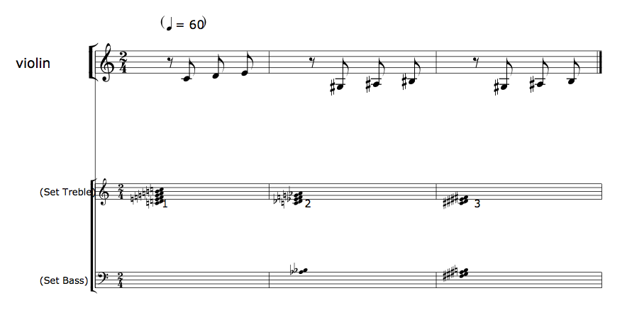
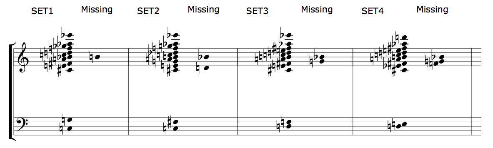
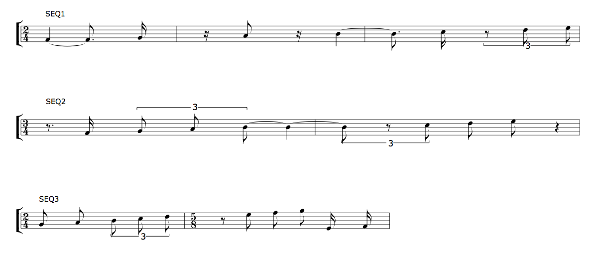

Output
+ Associated example files
The musical material generated by slippery chicken can be written to files in various formats. The user is not required to generate output files in order for slippery chicken to produce its data, but the data generated is not audible or printable without them.
The generation of MIDI files requires no extra installation or use of additional software, as they are created using a small subset of the Common Music (Heinrich Taube) package that comes bundled with slippery chicken. The MIDI files generated can be imported into notation software such as Finale, Sibelius, or the open-source alternative MuseScore for further editing.
The printable output options involve either Common Music Notation (CMN) or LilyPond. CMN must be installed and loaded into the Lisp environment before use, as is described on the installation page. The LilyPond application can be obtained from lilypond.org.
+ MIDI
MIDI output can be generated by slippery chicken using the
midi-play method. This method takes as its only required
argument a slippery-chicken object, which can also be
passed as a local variable or as the global variable defined as the
first argument to the make-slippery-chicken
function.
The method also requires a path name and file name for the output it
generates. These can be set using the optional keyword argument
:midi-file. If no value is passed to this argument by
the user, output is written to the default directory (initially /tmp) in
a MIDI file named from the :title slot of the
slippery chicken object.
A common straightforward application of this method may look like this:
(midi-play +sc-object+ :midi-file "/path/to/output-file.mid")
Setting MIDI parameters
The various settings for MIDI parameters are specified in different
contexts in slippery chicken. For example, program (or
"patch") numbers are specified in the definition
of instrument objects using
the :midi-program keyword (see the source code
documentation on
the make-instrument
function), and MIDI channel numbers are specified in
the ensemble block of
the make-slippery-chicken function (see the page
on ensembles). Information on the
features and limitations of microtonal MIDI output can also be found
on the "players and the
ensemble" page.
The midi-play method itself has 7 optional arguments
that influence the generation of the MIDI file, such
as start-section and players. Specifics on
all of the arguments for this method can be found in the source code
documentation
for slippery-chicken/midi-play.
+ CMN
The cmn-display method also takes as its only required
argument a slippery-chicken object, which can also be
given as a local variable or as the variable defined as the first
argument to make-slippery-chicken.
The cmn-display method can also be passed an output
file name path. This is set to the default directory (initially /tmp)
and an EPS file named from the :title slot of the
slippery chicken object by default. CMN generates encapsulated
post-script (.eps) files, so the user will require an
application that is capable of opening .eps files or
converting them to post-script or PDF, such as Apple's Preview.app or
the open source software GIMP.
A common straightforward useof this method may look like this:
(cmn-display +sc-object+ :file "/path/to/output-file.eps")
The cmn-display method has 31 optional arguments that
influence its output. Some of these, such
as respell-notes or auto-clefs, enable or
disable algorithms that will first alter the data of
the slippery-chicken object before generating the output
file. Others, such as size, page-height, or
auto-bar-nums, influence the page layout. Specifics on
all of the arguments for this method can be found in the source code
documentation
for slippery-chicken/cmn-display.
CMN for quick previewing
CMN's output can be useful as a preview, as it is easy to generate the whole score within Lisp and CMN generally runs faster than LilyPond. In some cases however, CMN will produce collisions of symbols on the page that can only be adjusted manually using external software such as Adobe Illustrator or the open-source application Inkscape. The use of LilyPond is encouraged for generating printable output that may require less post-generation tweaking.
+ Including pitch sets in CMN scores
The user can have the cmn-display method print the sets
of pitches used in each sequence of a slippery-chicken
object on separate staves at the bottom of the score by setting
the display-sets keyword argument
of cmn-display to T when applied to a
complete slippery-chicken object:
(let* ((sc-piece
(make-slippery-chicken
'+sc-piece+
:ensemble '(((vn (violin :midi-channel 1))))
:set-palette '((1 ((c4 d4 e4 f4 g4 a4 b4 c5)))
(2 ((af3 bf3 c4 df4 ef4 f4 g4 af4)))
(3 ((fs3 gs3 as3 b3 cs4 ds4 es4 fs4))))
:set-map '((1 (1 2 3)))
:rthm-seq-palette '((1 ((((2 4) (e) e e e))
:pitch-seq-palette ((1 2 3)))))
:rthm-seq-map '((1 ((vn (1 1 1))))))))
(cmn-display sc-piece :file "/tmp/sc-piece.eps" :display-sets t))
|  |
More information on this can be found in the source code documentation for slippery-chicken/cmn-display.
+ CMN output of just set-palettes and rthm-seq-palettes
The cmn-display method can also be used to generate
printable output of individual set-palette
or rthm-palette objects by applying the method directly
to them:
(let* ((sp (make-set-palette
'sp-data
'((set1 ((c3 g3 cs4 e4 fs4 a4 bf4 c5 d5 f5 gf5 af5 ef6)))
(set2 ((c3 fs3 cs4 e4 g4 a4 b4 c5 df5 f5 g5 af5 ef6)))
(set3 ((d3 f3 cs4 e4 fs4 a4 b4 c5 d5 e5 fs5 af5 ef6)))
(set4 ((d3 e3 cs4 ef4 fs4 a4 b4 c5 d5 e5 fs5 af5 d6)))))))
(cmn-display sp :file "/tmp/sp-out.eps" :break-line-each-set nil :size 16))
|  |
(let* ((rsp (make-rsp
'rsp-frag
'((seq1 ((((2 4) q +e. s)
((s) e (s) q)
(+e. s { 3 (te) te te } ))
:pitch-seq-palette (1 2 3 4 5 6 7)))
(seq2 ((((3 4) (e.) s { 3 te te te } +q)
({ 3 +te (te) te } e e (q)))
:pitch-seq-palette (2 3 4 5 6 7 8)))
(seq3 ((((2 4) e e { 3 te te te })
((5 8) (e) e e e s s))
:pitch-seq-palette (3 4 5 6 7 8 9 10 1 2)))))))
(cmn-display rsp :file "/tmp/rsp-out.eps"))
|  |
More information on using cmn-display
with set-palette and rthm-seq-palette
objects, as well as the arguments available for those contexts, can
be found in the source code documentation
for set-palette/cmn-display
and rthm-seq-palette/cmn-display.
NB: There is no cmn-display method
for rthm-seq-map objects, as this would essentially be
the same as applying the method to the slippery-chicken
object.
+ LilyPond
See core usage for discussion of automatically calling Lilypond and opening the resultant PDF when working with SBCL on OSX.
The write-lp-data-for-all method produces all of
the .ly files needed by the LilyPond application to
typeset the musical data of the given slippery-chicken
object. While the method doesn't run LilyPond automatically, as
the cmn-display method does with CMN, it does produce
separate files for the score and each of the individual players
of that object.
The method generates the file names of its output automatically
based on the title slot of
the slippery-chicken object. The file for the score can
be identified by the underscore placed at the beginning of the file
name and the -score suffix placed at the end. The names
of the files for the parts consist of the title, the player ID, and
the suffix -part. The additional -def file
need not be accessed directly by the user, but is required by
LilyPond.
Arguments
This method also takes as its only required argument
a slippery-chicken object, which can also be given as a
local variable or as the global variable defined as the first
argument to the
make-slippery-chicken function. The output path can be
specified using the keyword argument :base-path. As
opposed to the methods for the MIDI and CMN output,
the write-lp-data-for-all method requires no file name
with the path, as it generates the file names automatically. If no
output path is specified by the user, the method uses the default
path of "/tmp/".
A common straightforward application of this method may look like this:
(write-lp-data-for-all +sc-object+ :base-path "/tmp/")
The write-lp-data-for-all method has 28 optional
arguments, which, like those of the cmn-display method,
influence both the layout as well as the data of
the slippery-chicken object itself prior to generating
output. Specifics on all of the arguments for this method can be
found in the source code documentation
for slippery-chicken/write-lp-data-for-all.
NB: See also this note about Lilypond and instrument names.
LilyPond .app/.exe vs. command-line
LilyPond was originally designed for command-line use, and although it now comes packaged as a standalone executable for Mac (LilyPond.app) and Windows (LilyPad.exe), command-line usage is still an option.
NB: As of July 2012, the LilyPond.app was not yet compatible with Mac OSX 10.7.x ("Lion"). However, LilyPond can still be used on Lion from the command-line. Please refer to the documentation on the LilyPond website for more information on how to do this.
Update June 1st 2013: The Lilypond 2.16.2 app now runs on Lion. However in the meantime there's also the slippery-chicken lp-display macro for rendering scores all within the SBCL/OSX environment.
NB: LilyPond can take a long time to render output of larger scores, during which time it is unresponsive and may appear to have hung or frozen.
+ MusicXML
Music XML output has been available since slippery-chicken version 1.08. It allows the generation of MusicXML code in text form for input into various music notation programmes such as Finale, Dorico, Sibelius, MuseScore, NoteAbilityPro, etc. Note that while the import of MusicXML files into those programmes is generally good, different software/versions will import varying amounts of the encoded data and display it with varying degrees of success. Some (e.g. MuseScore, NoteAbilityPro) sadly fall over when trying to import more complex notations such as nested tuplets. So experimentation is necessary as well as acceptance that MusicXML is not the save-all you might hope it to be. It is, however, much, much better than MIDI import into notation programmes.
Overall, my experience during the 2017 design and implementation process was that Dorico handled MusicXML better than the other software named above, even if it didn't import as much as, say, Finale (this may change, quickly even, so we'll just leave that there). You can read more anecdotally about my experiences of implementing MusicXML for slippery-chicken on my blog.
Outputting MusicXML from a slippery-chicken object is very
straightforward: simply call the write-xml
method. All voices for the score and parts are written into one file. As
it is assumed that editing will take place in the notation software of
choice, there are only very basic arguments to this method, some of
which may even be ignored upon import. For example, the :in-c keyword
argument of other methods is missing here, as switching between
sounding and transposing scores is assumed to be the job of the notation
software used after MusicXML import.
See the write-xml
method for more details, particularly on the method arguments.
+ Third-party SVG editors
While both CMN and LilyPond strive to produce scores without the
need for further editing, some tweaking of the output may
occasionally be desired. In addition to modifying any of the
text-based LilyPond files generated, the .eps
and .pdf files that these applications produce can also
be manually manipulated using vector graphics editing software such
as Adobe
Illustrator or an open-source alternative such
as Inkscape. Editing scalable
vector graphic files (SVG), such as the .eps
or .pdf files produced by CMN and LilyPond, is easy and
very intuitive, as whole objects (e.g. note-heads, stems, beams,
bars, flags, dynamics, articulations etc.) can be simply clicked and
dragged.
+ CLM sound file output
CLM output in slippery chicken is generated using
the clm-play method. In its most straightforward form
that output can be generated as such:
(clm-play +sc-object+ 1 nil 'source-sndfile-grp-1)
A detailed description of the clm-play method,
including instructions for generating output, can be found on
the slippery chicken and CLM
page.
+ Default output directories and more
slippery chicken stores various configuration data
internally and allows you to change it via the function
set-sc-config. For instance, with SBCL on OSX, you can
choose whether to automatically open EPS files:
(set-sc-config 'cmn-display-auto-open NIL)
or with any Lisp on any system, to
change the default directory for output files:
(set-sc-config 'default-dir "/sc-output/:). See robodoc
for details.